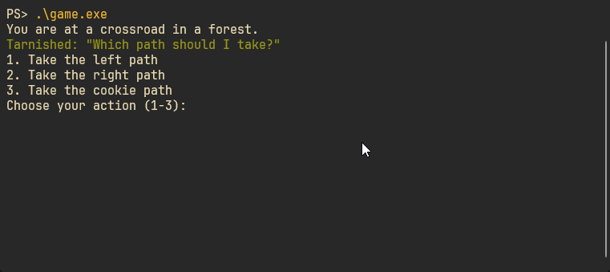

Towards a Visual Novel
A visual novel is a type of game where the player reads a lot of text and interacts with the characters.

There are also visuals.
There are supposed to be visuals...
More on that later…
My goal was to create a way for non-programmers to create visual novels by writing a simple script, with a syntax that can be read by anyone.
Domain Specific Languages
I wanted to build a DSL (Domain Specific Language) to pull this off.
A DSL is a special kind of language that is similar a general purpose programming language but it is made to do a very specific task.
For example, Python is a general purpose programming language. It can be used to build almost any type of software you could think of.

On the other hand, Unreal Blueprints is a DSL. It was designed to build logic for video games running on Unreal Engine.

I was considering my options, I could try to write a custom interpreter, or use a language workbench like Jetbrains MPS as a platform to create my DSL, but I had another idea in mind.
At the time, I was messing around with a language called Ruby.
The cool thing about Ruby is that it is flexible enough for me to define functions that feel like new syntax.

Ruby is well a well known language that is used widely… for web development. Not a lot of folks are using Ruby as an embedded scripting language for games, because although Ruby is a wonderful language to work in, it’s not the fastest.
But I was in a unique situation. Unlike most game engines that need their scripts to run at least once every 60th of a second. I only needed the script to be run once (kinda) at the beginning of the program.
I was ready to use Ruby and C++ to build the engine, before making a graphical application using SDL, I decided to get a text based prototype working in the terminal.
The DSL is using a feature of Ruby called blocks. Blocks are pieces of code that can be given to a function as input, they can be stored for later use. Ruby's syntax for these functions mimics some features of the language and makes it seem as if they were part of the language.
This is what the syntax for writing stories looks like:
create_story do
character :wizard, "Wizzo the Wizard", :blue
character :tarnished, "Tarnished", :green
scene :start do
description "You are at a crossroads in a forest."
dialogue :tarnished, "Which path should I take?"
choice "Take the left path", :left_path
choice "Take the right path", :right_path
choice "Take the cookie path", :cookie_path
end
endThe Story class holds on to the characters, the scenes, the current scene and the current state of the game.
class Story
attr_reader :scenes, :characters
attr_accessor :state
def initialize(&block)
@scenes = {}
@characters = {}
@current_scene = nil
instance_eval(&block)
end
# ...instance_eval(&block) is what executes the code in the block passed into the function.
The characters are represented by a map, which just keeps track of a user friendly version of their name and and the color to display their dialog in.
def character(name, display_name, color)
@characters[name] = { name: display_name, color: color }
endA scene holds a timeline, which is just an array. The timeline contains each description or dialog that appears in order from top to bottom.
The timeline for the :start scene would look like this:
[
"You are at a crossroad in a forest.",
{
character: :tarnished,
text: "Which path should I take?"
}
]This script by itself is just data, we need somthing that can understand it and turn it into an interactive story.
We need an engine.
The Engine
The engine is going to be responsible for turning the Ruby scripts into an actual game.
The engine starts by loads the DSL and uses a function in the DSL script to load the story script.
std::string dsl_code = read_file("story_dsl.rb");
mrb_load_string(mrb, dsl_code.c_str());
mrb_funcall(
mrb,
mrb_top_self(mrb),
"load_story", 1,
mrb_str_new_cstr(mrb, "test_story.rb"));The load_story function executes the contents of the story file, which is just a call to create_story with a block representing the entire story.
def load_story(filename)
story_content = File.read(filename)
$story = eval(story_content)
endThe heart of the engine is the code below. It displays timeline of current scene. and then deals with player choices.
Once the scene if over it checks if it can continue to the next scene, if there is no next scene it displays “The End.”
void StoryPlayer::play() {
while (true) {
mrb_value scene = mrb_utils.get_hash_value(scenes, current_scene.c_str());
if (mrb_type(scene) == MRB_TT_FALSE) {
std::cout << "[ERROR] :" << current_scene << " is not defined as a scene.\n";
}
print_timeline(scene);
mrb_value choices = mrb_utils.get_hash_value(scene, "choices");
mrb_value cont = mrb_utils.get_hash_value(scene, "continue");
if (mrb_utils.hash_empty(choices) && mrb_utils.is_nil(cont)) {
std::cout << "The End." << std::endl;
break;
}
if (handle_continue(scene)) {
flush_input_buffer();
continue;
}
handle_choices(scene);
}
}Running the program looks like this:

The Cliffhanger
I’ve set out to create a visual novel, but as of now I have a data-driven text adventure engine.
Stay tuned for Graphics.